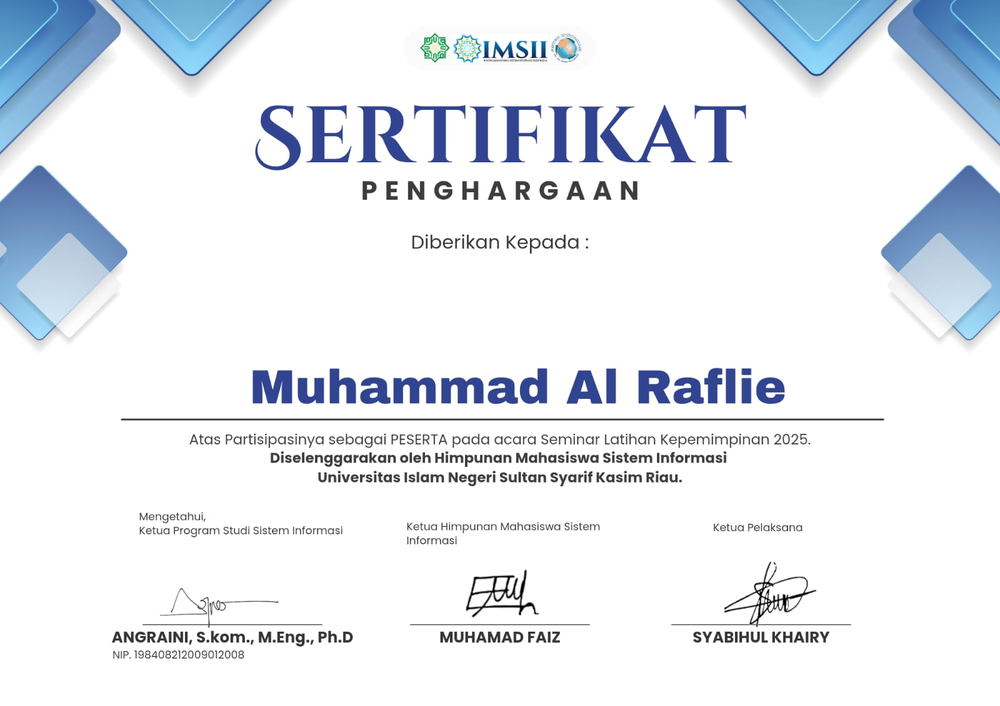
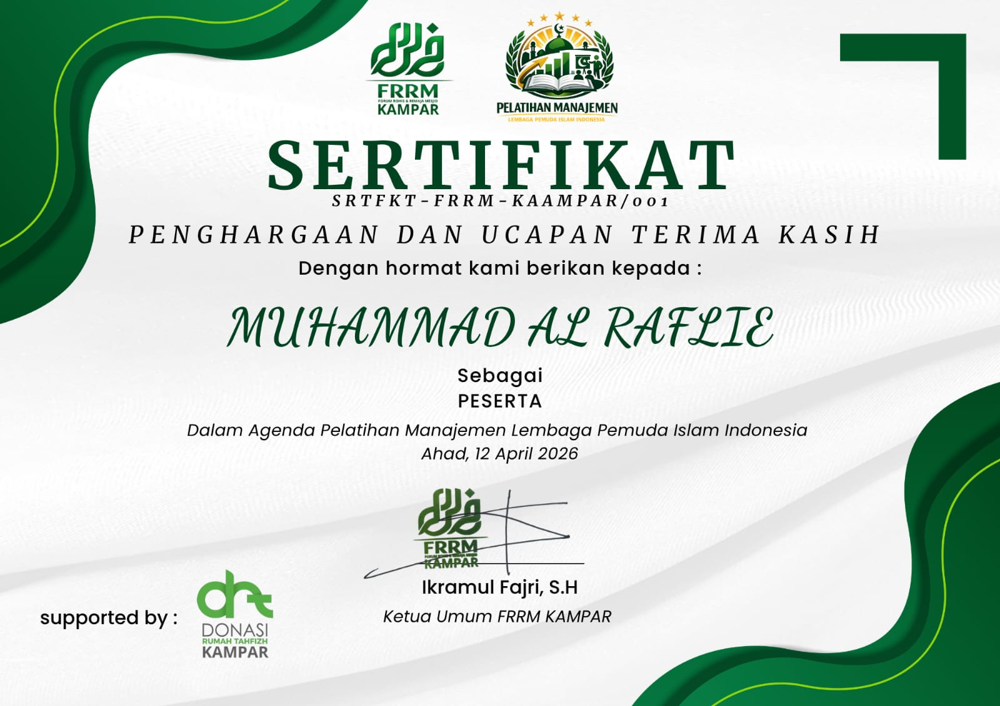
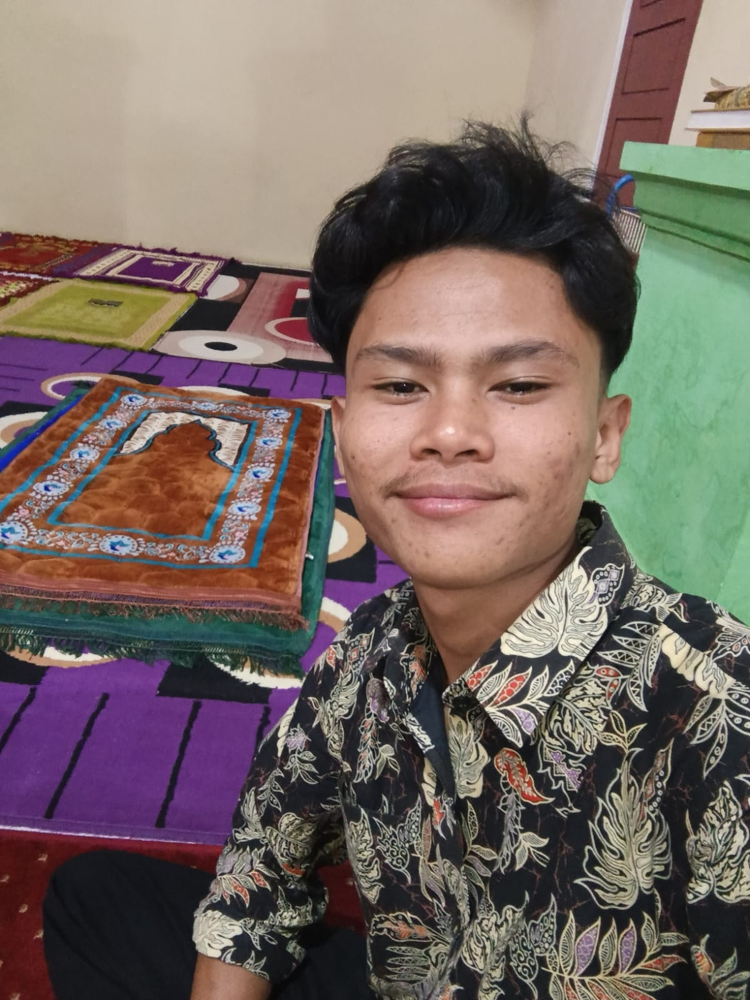

Sertifikat



Mahasiswa Sistem Informasi Fakultas Sains dan Teknologi UIN Sultan Syarif Kasim Riau yang memiliki minat di bidang teknologi informasi, basis data, jaringan komputer, dan pengembangan sistem. Aktif dalam kegiatan organisasi serta memiliki semangat belajar dan pengembangan diri yang tinggi.

Semester
Projects
Organisasi
Sertifikat
Saya adalah mahasiswa Program Studi Sistem Informasi, Fakultas Sains dan Teknologi, UIN Sultan Syarif Kasim Riau. Saya memiliki minat pada bidang:
Saya percaya bahwa belajar secara konsisten, aktif dalam organisasi, dan terus mengembangkan kemampuan teknis merupakan langkah penting untuk menjadi profesional di bidang teknologi.
MySQL Database
Java Dasar
Debian Linux
BPMN
Membuat aplikasi sistem kantin menggunakan Java dan MySQL.
Instalasi Debian pada VirtualBox serta konfigurasi server.

